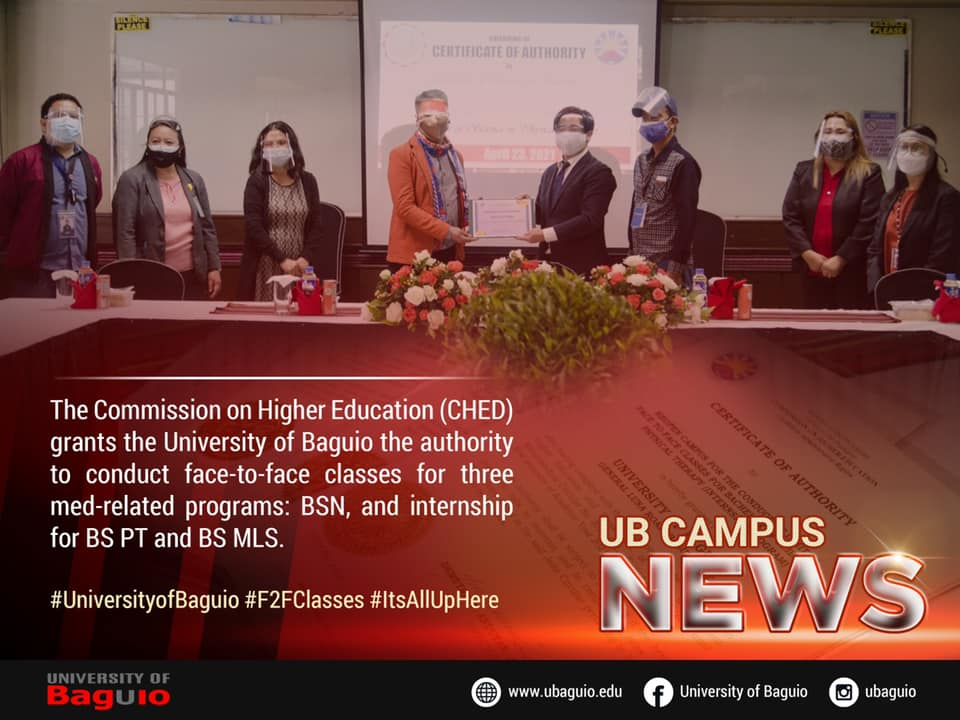

The University of Baguio is now accepting enrollees for the Academic Year 2021-2022!
Here are what you need to do for enrollment:
1.To register, go to https://portal.ubaguio.edu. Click "Apply as a New Student" and complete all the needed information.
2. After submitting your registration, you will receive a confirmation email with the link for the submission of scanned copy of the admission requirements.
3.Prepare and scan the admission requirements.
4.Accomplish the online enrollment via Google Forms and attach the admission requirements.
5.A copy of the accomplished form will be sent to your email account.
6.The Admissions and Records Center will evaluate your application. Upon approval, you will be contacted through the email address you provided in the form for your permanent ID number and log-in details to your UB Student Portal.
7.You may now pay the required downpayment to be officially enrolled and for you to view your class schedule online.
Payment options:
1. Payment through UB Cashier's Office (Monday to Friday, 8:00AM - 3:00 PM)
2. Payment through Metrobank Bills Payment. Account Name: University of Baguio
3. For more detailed payment procedures go to https://mis.ubaguio.edu/payment-procedure/

CHED PERMITS THREE UB PROGRAMS TO CONDUCT LIMITED F2F CLASSES
Three programs will be the first to come back to the university campus since home quarantine was implemented due to Covid-19.
The Commission on Higher Education (CHED) grants authority to the University of Baguio to hold limited face-to-face classes for BS Nursing and Internship for BS Physical Therapy and BS Medical Laboratory Science programs, effective April 22 until the end of the First Semester 2021-2022.
Prior to the application, the University of Baguio has implemented health protocols and procedures for in-campus interactions or movements, especially with some university administration and staff already reporting in-campus. CHED has conducted three-phased inspections in two months as the university reconfigured university premises and classrooms to safeguard students, staff, and faculty. Entry regulations and classroom setup and design will also be discussed and strictly implemented once limited face-to-face classes and internship will begin.